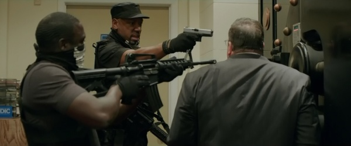
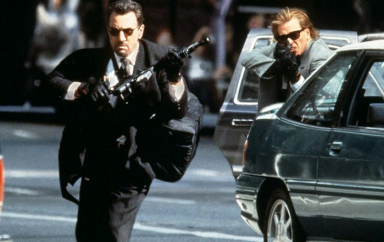
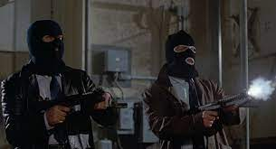

Mity o broni.
Powszechne mity o broni palnej:
1. W naszym polskim, nieobytym z bronią społeczeństwie, krąży wiele mitów i przesądów odnoszących się do strzelectwa, samej broni jak i osób bronią zainteresowanych. Pierwsze restrykcje odnośnie broni, nałożone na obywateli RP wprowadzono już w 1919 r.- tuż po odzyskaniu niepodległości. W kolejnych latach międzywojnia, zgodnie z panującym w Europie trendem wprowadzano kolejne. Jednakże największy udział w kształcie obecnego w Polsce przeświadczenia o uzbrojeniu miał okres PRL, w którym uznawano posiadanie broni za społecznie niedojrzałe i antypostępowe, tym samym wprowadzając kolejne restrykcje. Obecnie Polskie społeczeństwo powiela wiele mitów powstałych w tym szarym i pełnym fałszu okresie. W tym artykule postaram się obnażyć kilka z nich i bezpiecznie przybliżyć czytelnika do broni.

Jest to opinia obecna w śród Polaków bazująca zapewne na tym, jak mały odsetek z nas ma broń. Ale jak wielu z nas próbowało? Zdobycie broni w legalny sposób w Polsce jest w rzeczywistości niezwykle proste- nie trudniejsze niż zdobycie prawa jazdy, które jest niemal standardem. Tak ja w przypadku prawa jazdy wymagana jest pełnoletniość, przejście odpowiednich badań lekarskich (w tym przypadku psychologicznych) i ukończenie specjalnego kursu zakończonego egzaminem. W przypadku broni jednak, należy jednak najpierw jeszcze dobrze zaznajomić się z tematem i rodzajami pozwoleń. Jednakże pomóc nam w tym mogą organizacje takie jak:
braterstwo.eu - zajmujące się promowaniem wiedzy o broni palnej wśród cywili.

2. Lepiej broni nie mieć w sytuacji zagrożenia, bo to tylko sprowokuje napastnika.
W Stanach Zjednoczonych przeanalizowano pod kontem przyjętej taktyki obronnej około 38 mln przypadków napaści. Z badań wynika, iż sięgnięcie po broń jest prawie najskuteczniejszą metodą na udaremnienie przestępstwa (69% przypadków) i jest także najbezpieczniejsza dla osoby zaatakowanej. Mowa jest tutaj tylko o statystykach policyjnych. Bardzo wiele napadów na pewno nie zostało zgłoszonych, gdy pod wpływem wyciągnięcia broni napastnik z niego zrezygnował. W Szwajcarii szkolenia kobiet w obsłudze broni okazały się być także niezwykle skutecznym środkiem na zapobieganie gwałtów. Statystyki ukazały 90% spadek ich liczby w skali roku.
Jednakże w świetle polskich realiów noszenie broni na ulicy jest niezalecane. Głównie ze względu na wrażliwość funkcjonariuszy na ten temat i praktykę polskiego prawa wg. Której za samo wyciągnięcie broni nawet w obronie własnej możemy mieć spore problemy z wymiarem sprawiedliwości (mimo że wg. Przepisów wydawać by się to mogło legalne...). Przypominamy by w razie kontroli od razu zawiadomić funkcjonariusza o posiadanej broni. Ułatwi nam to dalszy przebieg czynności służbowych policjanta.
3. Broń zabija.
Broń nie zabija. To ludzie używając broni zabijają. Broń jest tylko i wyłącznie narzędziem, z którego trzeba umieć korzystać i nie służy wyłącznie do siania śmierci. Strzelectwo to bardzo satysfakcjonujący i wynagradzający sport, w którym rozwój następuje tak samo jak np. W bieganiu. Kolekcjonerstwo broni to również bardzo interesujące hobby, które niejednokrotnie może dawać równoważne efekty co kolekcjonerstwo znaczków (I nie jest takie drogie). Osoby posiadające broń nie stają się z powodu samego posiadania broni przestępcami (Chyba, że robią to nielegalnie). Zauważmy, że mordercy nie potrzeba broni palnej by dokonać napadu czy też zabójstwa. Wobec tego nie należy zwalać winy za tragedie, na narzędzie jakie stało się jej udziałem.

Podobnie szkodliwą praktyką są petycje o ograniczenie dostępu do broni dla prawych obywateli. Czarny rynek za nic ma postanowienia aktywistów, którzy na ulicach rozwieszają transparenty “Nie dla broni palnej”. Przeciwnie, przestępcom nawet łatwiej będzie dokonywać rozbojów w rozbrojonym społeczeństwie...

4. Broń jest tylko dla komandosów i spec-służb.
Czasem napotkać możemy opinie jakoby strzelectwo, broń i powiązane z tym rzeczy były tylko i wyłącznie domeną funkcjonariuszy publicznych i żołnierzy. Jest to oczywiście nieprawdą. Pomimo tego, że broń to narzędzie pracy wojskowych i jeden ze środków przymusu bezpośredniego, to jednak każdy z nas może pozwolić sobie na broń, oczywiście spełniając wymogi określone w Ustawie o Broni i Amunicji i pochodnych rozporządzeniach.